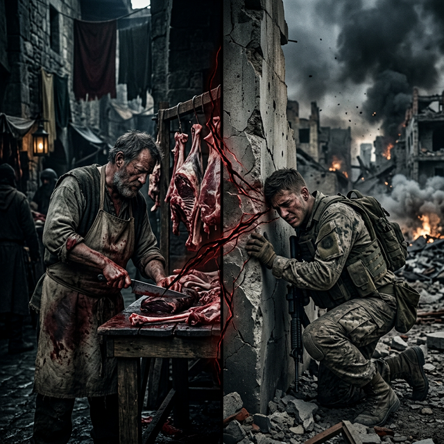
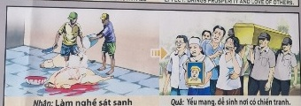

El Hilo de la Vida The Thread of Life Il filo della vita 生命之线 خيط الحياة Нить жизни Der Faden des Lebens Le fil de la vie 命の糸 O fio da vida
El respeto sagrado por cada latido divino. Sacred respect for every divine heartbeat. Sacro rispetto per ogni battito del cuore divino. 对每一次神圣心跳的神圣尊重。 الاحترام المقدس لكل نبضة قلب إلهية. Священное уважение к каждому удару божественного сердца. Heiliger Respekt für jeden göttlichen Herzschlag. Respect sacré de chaque battement de cœur divin. 神聖な鼓動のひとつひとつに神聖な敬意を表します。 Respeito sagrado por cada batida do coração divino.
Hien trabajaba en la matanza de animales con una indiferencia glacial. Su desprecio por el latido divino sembró una Causa de fragilidad física. Hoy, ese mismo espíritu habita en un soldado que siente en su piel la vulnerabilidad que una vez impuso.
Hien worked in the slaughter of animals with glacial indifference. His contempt for the divine heartbeat sowed a Cause of physical fragility. Today, that same spirit dwells in a soldier who feels on his skin the vulnerability he once imposed.
"Quien protege la vida, es protegido por ella."
"He who protects life is protected by it."
El Suspiro del Viento
The Sigh of the Wind
Il sospiro del vento
风的叹息
تنهيدة الريح
Вздох ветра
Der Seufzer des Windes
Le soupir du vent
風のため息
O Suspiro do Vento
Un verdugo de corazón de hielo levantaba su espada sin emoción, cortando vidas como quien poda malas hierbas. Se creía el dueño del destino, superior a las vidas temblorosas que suplicaban piedad bajo su sombra...
Pero la balanza de la vida es justa e inquebrantable. Un día, su espíritu despertó siendo un frágil soldado acorralado en una trinchera. El estruendo de las bombas sacudía la tierra, y él se encogía de puro terror, sintiendo cómo cada suspiro podía ser el último.
El verdugo estaba aprendiendo, gota a gota, lo que era ser la presa. A través de su propio temblor, por fin pudo comprender la sacralidad preciosa de cada aliento. El universo no lo humillaba por venganza; le estaba rompiendo la coraza, para enseñarle, entre lágrimas de miedo, que toda vida merece ser protegida y amada.
An ice-hearted executioner raised his sword without emotion, cutting down lives like someone pruning weeds. He believed himself to be the master of destiny, superior to the trembling lives that begged for mercy under his shadow...
But the balance of life is fair and unbreakable. One day, his spirit awakened as a fragile soldier cornered in a trench. The roar of the bombs shook the earth, and he cowered in pure terror, feeling how each breath could be his last.
The executioner was learning, drop by drop, what it was like to be the prey. Through his own trembling, he was finally able to understand the precious sacredness of each breath. The universe did not humiliate him out of revenge; I was breaking his armor, to teach him, through tears of fear, that all life deserves to be protected and loved.
Un boia dal cuore di ghiaccio alzò la spada senza emozione, abbattendo vite umane come qualcuno che pota le erbacce. Credeva di essere il padrone del destino, superiore alle vite tremanti che imploravano pietà sotto la sua ombra...
Ma l’equilibrio della vita è giusto e indistruttibile. Un giorno, il suo spirito si risvegliò come un fragile soldato messo alle strette in una trincea. Il ruggito delle bombe scosse la terra, e lui si rannicchiò in puro terrore, sentendo come ogni respiro potesse essere l'ultimo.
Il boia stava imparando, goccia a goccia, cosa volesse dire essere la preda. Attraverso il suo tremore, riuscì finalmente a comprendere la preziosa sacralità di ogni respiro. L'universo non lo ha umiliato per vendetta; Stavo rompendo la sua armatura, per insegnargli, attraverso lacrime di paura, che tutta la vita merita di essere protetta e amata.
一个冷酷的刽子手毫无感情地举起了剑，像修剪杂草一样砍杀生命。他相信自己是命运的主宰，凌驾于那些在他的阴影下颤抖求饶的生命……
但生活的平衡是公平且牢不可破的。有一天，当一名脆弱的士兵被困在战壕里时，他的灵魂苏醒了。炸弹的轰鸣声震动了大地，他因纯粹的恐惧而畏缩起来，感觉每一次呼吸都可能是他的最后一口气。
刽子手一点一点地了解成为猎物是什么感觉。通过自己的颤抖，他终于能够明白每一次呼吸的珍贵神圣。宇宙羞辱他并非出于报复，而是出于报复。我正在打破他的盔甲，通过恐惧的泪水教导他，所有的生命都应该受到保护和热爱。
رفع الجلاد ذو القلب الجليدي سيفه دون انفعال، مما أدى إلى قطع حياة شخص مثل شخص يقوم بتقليم الأعشاب الضارة. كان يعتقد أنه سيد القدر، متفوقًا على الأرواح المرتعشة التي توسلت من أجل الرحمة تحت ظله...
لكن ميزان الحياة عادل وغير قابل للكسر. وفي أحد الأيام، استيقظت روحه عندما كان جنديًا ضعيفًا محاصرًا في خندق. هز هدير القنابل الأرض، وانكمش في رعب تام، وهو يشعر كيف يمكن أن يكون كل نفس له هو الأخير.
كان الجلاد يتعلم، قطرة بعد قطرة، ما يعنيه أن تكون فريسة. ومن خلال ارتعاشه، تمكن أخيرًا من فهم القداسة الثمينة لكل نفس. لم يذله الكون انتقاما؛ كنت أكسر درعه، لأعلمه، من خلال دموع الخوف، أن الحياة كلها تستحق الحماية والمحبة.
Палач с ледяным сердцем без эмоций поднял свой меч, срезая жизни, как подрезая сорняки. Он считал себя хозяином судьбы, стоящим выше дрожащих жизней, моливших о пощаде под его тенью...
Но баланс жизни справедлив и нерушим. Однажды его дух пробудился, когда хрупкий солдат застрял в окопе. Грохот бомб сотряс землю, и он съежился от ужаса, чувствуя, что каждый вздох может стать для него последним.
Палач по капле узнавал, что значит быть добычей. Через собственную дрожь он, наконец, смог понять драгоценную святость каждого дыхания. Вселенная унизила его не из мести; Я ломал его доспехи, чтобы сквозь слезы страха научить его, что вся жизнь заслуживает защиты и любви.
Ein eisiger Henker hob emotionslos sein Schwert und schnitt Leben ab wie jemand, der Unkraut beschneidet. Er glaubte, der Herr des Schicksals zu sein und den zitternden Leben überlegen zu sein, die unter seinem Schatten um Gnade bettelten ...
Aber das Gleichgewicht des Lebens ist gerecht und unzerbrechlich. Eines Tages erwachte sein Geist, als ein zerbrechlicher Soldat in einem Schützengraben in die Enge getrieben wurde. Das Dröhnen der Bomben erschütterte die Erde, und er duckte sich voller Angst und spürte, dass jeder Atemzug sein letzter sein könnte.
Der Henker lernte Tropfen für Tropfen, wie es war, zur Beute zu werden. Durch sein eigenes Zittern gelang es ihm schließlich, die kostbare Heiligkeit jedes Atemzugs zu verstehen. Das Universum hat ihn nicht aus Rache gedemütigt; Ich habe seine Rüstung gebrochen, um ihm unter Tränen der Angst zu zeigen, dass alles Leben es verdient, beschützt und geliebt zu werden.
Un bourreau au cœur de glace leva son épée sans émotion, tuant des vies comme quelqu'un qui taille des mauvaises herbes. Il se croyait le maître du destin, supérieur aux vies tremblantes qui imploraient grâce sous son ombre...
Mais l’équilibre de la vie est juste et inébranlable. Un jour, son esprit s'est réveillé sous la forme d'un soldat fragile coincé dans une tranchée. Le rugissement des bombes secoua la terre et il se recroquevilla de pure terreur, sentant que chaque souffle pouvait être son dernier.
Le bourreau apprenait, goutte à goutte, ce que c'était d'être une proie. Grâce à son propre tremblement, il fut enfin capable de comprendre le précieux caractère sacré de chaque respiration. L'univers ne l'a pas humilié par vengeance ; Je brisais son armure, pour lui apprendre, à travers des larmes de peur, que toute vie mérite d'être protégée et aimée.
氷の心の死刑執行人は無感情に剣を振り上げ、まるで雑草を剪定するかのように命を切り捨てた。彼は自分が運命の支配者であり、彼の影で慈悲を乞う震える命よりも優れていると信じていた...
しかし、人生のバランスは公平であり、崩れることはありません。ある日、彼の精神は塹壕に追い詰められた脆弱な兵士として目覚めた。爆弾の轟音が大地を震わせ、彼は純粋な恐怖に身をすくめ、一息が最後になるかもしれないと感じた。
死刑執行人は、獲物になることがどのようなものか、一滴一滴学んでいた。彼は自らの震えを通して、ついにそれぞれの呼吸の尊い神聖さを理解することができました。宇宙は復讐のために彼を辱めたのではありません。私は彼の鎧を壊し、恐怖の涙を流しながら、すべての命は保護され、愛されるに値することを彼に教えました。
Um carrasco de coração gelado ergueu sua espada sem emoção, ceifando vidas como alguém podando ervas daninhas. Ele acreditava ser o mestre do destino, superior às vidas trêmulas que imploravam por misericórdia sob sua sombra...
Mas o equilíbrio da vida é justo e inquebrável. Um dia, seu espírito despertou como um frágil soldado encurralado em uma trincheira. O estrondo das bombas sacudiu a terra e ele se encolheu de puro terror, sentindo como cada respiração poderia ser a última.
O carrasco aprendia, gota a gota, como era ser a presa. Através de seu próprio tremor, ele finalmente foi capaz de compreender a preciosa sacralidade de cada respiração. O universo não o humilhou por vingança; Eu estava quebrando sua armadura para ensiná-lo, em meio às lágrimas de medo, que toda vida merece ser protegida e amada.

La Inspiración Original
The Original Inspiration
L'Ispirazione Originale
最初的灵感
الإلهام الأصلي
Оригинальное вдохновение
Die Ursprüngliche Inspiration
L'Inspiration Originale
元のインスピレーション
A Inspiração Original
La historia que hemos relatado en este capítulo está inspirada por el pasaje de la escena original de los murales «Tranh Nhân Quả» (Ilustraciones del Karma) del Templo Linh Ung en Da Nang, capturado en la imagen.
La storia che abbiamo raccontato in questo capitolo è ispirata al passaggio della scena originale dei murali “Tranh Nhân Quả” (Illustrazioni del Karma) del Tempio Linh Ung a Da Nang, catturati nell'immagine.
我们在本章中讲述的故事的灵感来自图像中捕获的岘港灵应寺“Tranh Nhân Quả”（业力插图）壁画的原始场景。
القصة التي رويناها في هذا الفصل مستوحاة من مقطع من المشهد الأصلي لجداريات "ترانه نهان كو" (الرسوم التوضيحية للكارما) لمعبد لينه أونغ في دا نانغ، الملتقطة في الصورة.
История, которую мы рассказали в этой главе, вдохновлена отрывком из оригинальной сцены фрески «Тран Нхан Ку» («Иллюстрации кармы») храма Линь Унг в Дананге, запечатленной на изображении.
Die Geschichte, die wir in diesem Kapitel erzählt haben, ist inspiriert von der Passage aus der Originalszene der Wandgemälde „Tranh Nhân Quả“ (Illustrationen von Karma) des Linh Ung-Tempels in Da Nang, die im Bild festgehalten ist.
L'histoire que nous avons racontée dans ce chapitre est inspirée du passage de la scène originale des peintures murales « Tranh Nhân Quả » (Illustrations du Karma) du temple Linh Ung à Da Nang, capturées dans l'image.
この章で私たちが語った物語は、ダナンのリンウン寺院の壁画「Tranh Nhân Quả」（カルマの図）の元のシーンの一節からインスピレーションを得て、画像に収められています。
A história que contamos neste capítulo é inspirada na passagem da cena original dos murais “Tranh Nhân Quả” (Ilustrações do Karma) do Templo Linh Ung em Da Nang, capturada na imagem.
The story we have related in this chapter is inspired by the passage from the original scene of the "Tranh Nhân Quả" (Karma Illustrations) murals at the Linh Ung Temple in Da Nang, captured in the image.

Como se puede apreciar en el pasaje extraído del mural, la causa y su efecto kármico están descritos originalmente en vietnamita y con una breve traducción al inglés. A continuación, te ofrecemos la traducción y el análisis en tu idioma:
As can be seen in the passage extracted from the mural, the cause and its karmic effect are originally described in Vietnamese with a brief English translation. Below, we offer the translation and analysis in your language:
Come si può vedere nel brano tratto dal murale, la causa e il suo effetto karmico sono originariamente descritti in vietnamita e con una breve traduzione in inglese. Di seguito offriamo la traduzione e l'analisi nella tua lingua:
从壁画的段落中可以看出，因果及其业果最初是用越南语描述的，并有简短的英文翻译。下面我们提供您的语言的翻译和分析：
وكما يتبين من المقطع المأخوذ من اللوحة الجدارية، فإن السبب وتأثيره الكارمي موصوفان في الأصل باللغة الفيتنامية مع ترجمة مختصرة إلى الإنجليزية. نقدم أدناه الترجمة والتحليل بلغتك:
Как видно из отрывка, взятого из фрески, причина и ее кармическое следствие изначально описаны на вьетнамском языке и с кратким переводом на английский язык. Ниже мы предлагаем перевод и анализ на ваш язык:
Wie aus der Passage aus dem Wandgemälde hervorgeht, werden die Ursache und ihre karmische Wirkung ursprünglich auf Vietnamesisch und mit einer kurzen Übersetzung ins Englische beschrieben. Nachfolgend bieten wir die Übersetzung und Analyse in Ihrer Sprache an:
Comme on peut le voir dans le passage tiré de la peinture murale, la cause et son effet karmique sont initialement décrits en vietnamien et avec une brève traduction en anglais. Ci-dessous, nous proposons la traduction et l’analyse dans votre langue :
壁画の一節からわかるように、原因とそのカルマ的影響はもともとベトナム語で説明されており、英語への簡単な翻訳が付けられています。以下にあなたの言語での翻訳と分析を提供します。
Como pode ser visto no trecho retirado do mural, a causa e seu efeito cármico são originalmente descritos em vietnamita e com uma breve tradução para o inglês. Abaixo oferecemos a tradução e análise em seu idioma:
🇻🇳 Tiếng Việt:
Nhân: Làm nghề sát sanh.
Quả: Yểu mạng, đẻ sinh nơi có chiến tranh.
🇬🇧 English Translation:
Cause: Working as a slaughterer in the previous life.
Effect: Brings rebirth of short-life and in war zones.
Traducción Recreada:
Causa: Haber trabajado como un verdugo matarife impío en una vida anterior.
Efecto: Conlleva un renacer frágil con vida corta y en zona de guerras cruentas.
Recreated Translation:
Cause: Having worked as an impious slaughtering executioner in a previous life.
Effect: It entails a fragile rebirth with a short life and in a zone of bloody wars.
Traduzione ricreata:
Causa: aver lavorato come empio boia massacratore in una vita precedente.
Effetto: comporta una fragile rinascita con una vita breve e in una zona di guerre sanguinose.
重制译文：
起因：前世做过不虔诚的屠宰刽子手。
结果：它带来脆弱的重生，短暂的生命和血腥战争的地区。
الترجمة المُعاد إنشاؤها:
السبب: العمل كجلاد ذبح كافر في حياة سابقة.
التأثير: يستلزم ولادة جديدة هشة مع حياة قصيرة وفي منطقة حروب دامية.
Воссозданный перевод:
Причина: Работа нечестивым палачом-убийцей в предыдущей жизни.
Следствие: Оно влечет за собой хрупкое перерождение с короткой жизнью и в зоне кровавых войн.
Nachgebildete Übersetzung:
Ursache: Hat in einem früheren Leben als gottloser Henker gearbeitet.
Wirkung: Es bringt eine fragile Wiedergeburt mit einem kurzen Leben und in einer Zone blutiger Kriege mit sich.
Traduction recréée :
Cause : Avoir travaillé comme bourreau impie dans une vie antérieure.
Effet : Cela implique une renaissance fragile avec une vie courte et dans une zone de guerres sanglantes.
再作成された翻訳:
原因:前世で不敬な虐殺処刑人として働いていた。
結果:それは、血なまぐさい戦争の地帯で、短い人生を持つ脆弱な再生を伴う。
Tradução recriada:
Causa: Tendo trabalhado como um ímpio carrasco matador em uma vida anterior.
Efeito: Implica um renascimento frágil com uma vida curta e em uma zona de guerras sangrentas.
Análisis: No se puede sesgar brutalmente y a destajo la existencia temblorosa de una criatura asumiendo que esa energía no te salpicará. El menosprecio por el pulso de la viña divina te abocará, más temprano que tarde, a ser arrojado al terror incesante de la batalla y sobrevivir a la pavorosa realidad de la guerra y la impotencia. Una pedagogía dura y asfixiante impuesta al alma de hielo para que encienda un destello de empatía hacia toda forma de vida.
Analysis: You can't brutally and piecemeal skew a creature's trembling existence assuming that energy won't splash back at you. Contempt for the pulse of the divine vineyard will lead you, sooner rather than later, to be thrown into the incessant terror of battle and survive the terrifying reality of war and helplessness. A harsh and suffocating pedagogy imposed on the soul of ice so that it ignites a flash of empathy towards all forms of life.
Analisi: non puoi distorcere brutalmente e frammentariamente la tremante esistenza di una creatura dando per scontato che l'energia non ti ritorni addosso. Il disprezzo per il battito della vigna divina ti porterà, prima o poi, a essere gettato nel terrore incessante della battaglia e a sopravvivere alla terrificante realtà della guerra e dell'impotenza. Una pedagogia dura e soffocante imposta all'anima di ghiaccio affinché accenda un lampo di empatia verso ogni forma di vita.
分析：你不能残酷地、零碎地扭曲一个生物的颤抖存在，假设能量不会溅回到你身上。对神圣葡萄园脉搏的蔑视迟早会导致你陷入无尽的战争恐怖之中，并在战争和无助的可怕现实中生存下来。严酷而令人窒息的教学法强加于冰之灵魂，使其点燃对所有生命形式的同情心。
التحليل: لا يمكنك تشويه الوجود المرتعش لمخلوق بطريقة وحشية وتدريجية على افتراض أن الطاقة لن تتدفق إليك مرة أخرى. إن ازدراء نبض الكرم الإلهي سوف يقودك، عاجلاً وليس آجلاً، إلى الوقوع في رعب المعركة المستمر والبقاء على قيد الحياة من الواقع المرعب للحرب والعجز. تربية قاسية وخانقة تُفرض على روح الجليد بحيث تشعل ومضة من التعاطف تجاه جميع أشكال الحياة.
Анализ: Вы не можете грубо и по частям исказить дрожащее существование существа, предполагая, что энергия не обрушится на вас. Презрение к пульсу божественного виноградника рано или поздно приведет вас к непрекращающемуся ужасу битвы и выживанию в ужасающей реальности войны и беспомощности. Жесткая и удушающая педагогика, навязанная ледяной душе так, что она зажигает вспышку сопереживания ко всем формам жизни.
Analyse: Sie können die zitternde Existenz einer Kreatur nicht brutal und Stück für Stück zerstören, vorausgesetzt, dass die Energie nicht auf Sie zurückprasselt. Die Verachtung des Pulses des göttlichen Weinbergs wird eher früher als später dazu führen, dass Sie in den unaufhörlichen Schrecken des Kampfes geraten und die schreckliche Realität von Krieg und Hilflosigkeit überleben. Eine harte und erstickende Pädagogik, die der Seele aus Eis aufgezwungen wird, damit sie einen Blitz der Empathie gegenüber allen Formen des Lebens entfacht.
Analyse : Vous ne pouvez pas fausser brutalement et fragmentairement l'existence tremblante d'une créature en supposant que son énergie ne vous rejaillira pas. Le mépris du pouls de la vigne divine vous conduira, tôt ou tard, à être plongé dans la terreur incessante de la bataille et à survivre à la terrifiante réalité de la guerre et de l’impuissance. Une pédagogie dure et étouffante imposée à l’âme de glace pour qu’elle déclenche un éclair d’empathie envers toutes les formes de vie.
分析: エネルギーがあなたに跳ね返らないと仮定すると、生き物の震える存在を残酷かつ断片的に歪めることはできません。神聖なブドウ畑の鼓動を軽蔑すれば、遅かれ早かれあなたは絶え間なく続く戦闘の恐怖に放り込まれ、戦争と無力の恐ろしい現実を生き抜くことになるでしょう。氷の魂に課せられた厳しくて息の詰まるような教育法は、あらゆる生命体に対する共感の閃光を呼び起こします。
Análise: Você não pode distorcer brutalmente e aos poucos a existência trêmula de uma criatura, presumindo que a energia não retornará para você. O desprezo pela pulsação da vinha divina levará você, mais cedo ou mais tarde, a ser lançado no terror incessante da batalha e a sobreviver à terrível realidade da guerra e do desamparo. Uma pedagogia dura e sufocante imposta à alma do gelo para que acenda um lampejo de empatia por todas as formas de vida.
Si quieres conocer más sobre el proyecto o colaborar, accede a nuestro Linktree.
If you want to know more about the project or collaborate, access our Linktree.
Se vuoi saperne di più sul progetto o collaborare, accedi al nostro Linktree.
如果您想了解有关该项目或合作的更多信息，请访问我们的 Linktree.
إذا كنت تريد معرفة المزيد عن المشروع أو التعاون، قم بالوصول إلى موقعنا Linktree.
Если вы хотите узнать больше о проекте или сотрудничать, посетите наш Linktree.
Wenn Sie mehr über das Projekt erfahren oder zusammenarbeiten möchten, greifen Sie auf unsere zu Linktree.
Si vous souhaitez en savoir plus sur le projet ou collaborer, accédez à notre Linktree.
プロジェクトについて詳しく知りたい場合、またはコラボレーションしたい場合は、こちらにアクセスしてください。 Linktree.
Se quiser saber mais sobre o projeto ou colaborar, acesse nosso Linktree.